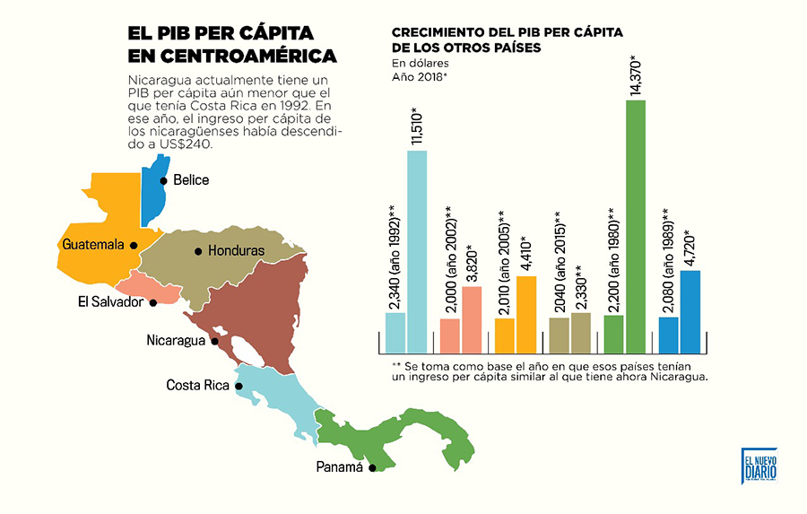
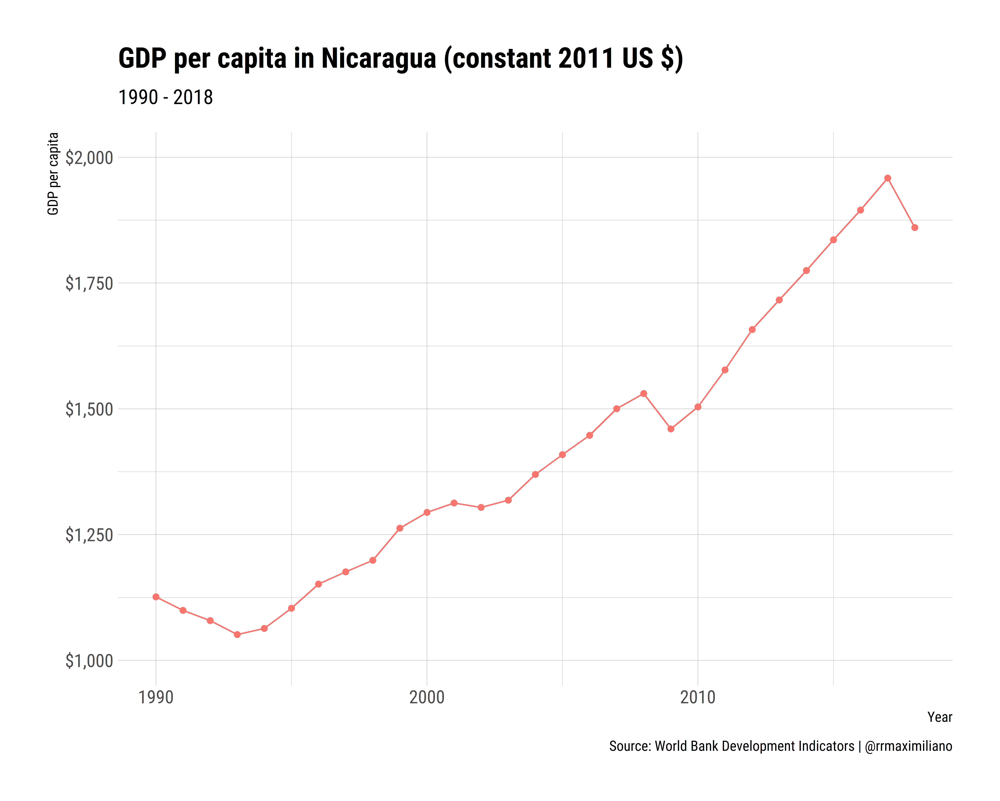

Un punto importante en el análisis de datos es la visualización. Dado que muchas veces resulta difícil conocer realmente lo que sucede sobre un evento x, es necesario recurrir a figuras que en la mayoría de las ocasiones describen y expresar mejor un mensaje en comparación a las palabras. Sin embargo, la visualización de datos no es algo sencillo y existen elementos sumamente necesarios para poder conllevar un mensaje claro.
Ayer, 24 de junio, se publicó un artículo en el Nuevo Diario con el objetivo de analizar los niveles del Producto Interno Bruto (PIB) per cápita en Nicaragua comparándolos con los demás países de Centroamérica. No obstante, el artículo presenta varios problemas los cuales se pueden solucionar.
Problemas con el artículo del Nuevo Diario
Omitiendo un poco la redacción del artículo y centrándonos solamente en las visualización podemos dividir los errores en dos: (1) información relevante, y (2) estética.
La primera figura es sobre el PIB per cápita en Centroamérica y presenta un mapa al lado izquierdo y un gráfico de barras en el derecho.
Realmente no hay ningún problema en presentar dos figuras dentro de la misma infografía pero hay que poner atención a los detalles que se van a incluir. En términos de información relevante se dan las siguientes errores:
- Datos: Los datos que utiliza la gráfica tienen los siguientes elementos que hacen difícil digerirla.
- No todos los años son consistentes. La comparación que hacen es tomando como base el año en que los países tenían ingresos similares al que tiene Nicaragua hoy en día. Esto conlleva que países como Costa Rica tengan datos para 1992, Belize para 1989, etc.
- Por otro lado, el año de referencia pudo ser 1990 para todos y así construir las diferencias.
- Fuente: Ninguna de las figuras presenta fuente. En el cuerpo del texto se da a entender que los datos fueron tomados del Banco Mundial; sin embargo, esto debe ser incluído en la gráfica.
- Año base, desde el punto de vista técnico: Un punto importante en economía es ver las diferencias en términos reales de las economía. En este caso, es necesario aislar los cambios que provienen solamente por el aumento de los precios. Lamentablemente los datos no presentan información sobre el tipo de indicador que se ocupa. Por ejemplo, si es PIB per cápita real, nominal, o si está ajustado por paridad de poder adquisitivo.
- Necesidad de un mapa: El mapa realmente no aporta mucho a la conversación sobre el PIB per cápita de Centroamérica; no es de utilidad y solamente nos cubre espacio.
Ahora, en términos de estética (aesthetics) se presentan los siguientes errores:
- Código de colores: Para el mapa, la infografía utiliza un código de colores que identifica a cada país en el gráfico de barros. Sin embargo, no todos los países están visualizados en el la gráfica. Por ejemplo, se omite el PIB per cápita de Nicaragua.
- Conexión entre el mapa y los datos: Por otro lado, para poder ubicar un país con su respectivo dato tenemos que movernos entre el mapa y el gráfico de barras. El gráfico de barras debería contener fácilmente algo que nos haga identificar que el color verde es de Panamá, el color celeste es de Costa Rica, y así sucesivamente.
- Escala del eje y: La figura no tiene información sobre la dimensión del eje y. Hasta cierto punto, y con mi poca habilidad ocular, las barras no son proporcionales. Siempre es necesario identificar que es lo que los ejes nos están diciendo.
- Paleta de colores: La paleta utilizada en esta figura puede no ser la más idónea para personas con daltonismo. Para más información sobre estas el diseño universal de colores pueden visitar esta página.
¿Cómo podríamos visualizar mejor estos datos?
Disclaimer: Busqué en la base de datos del Banco Mundial, y ningún indicador de PIB per cápita tanto a nivel real, nominal, o ajustado por paridad de poder aquisitivo resultaba en los mismos datos que presenta el artículo del Nuevo Diario.
Siguiendo la idea comparativa entre un año base y el año actual retomada en el artículo del Nuevo Diarío, podríamos graficar el PIB per cápita de la siguiente forma:

Esta figura contiene todos los elementos necesarios para poder expresar el mensaje del artículo del Nuevo Diario.
- Título con información sobre el indicador.
- Cada eje tiene una etiqueta que describe la información pertinente. Además, el eje X tiene formato en dólares.
- Contiene información sobre la fuente y la persona que realizó el gráfico.
- Por último, compara la evolución de PIB en dos años 1990 y 2018, y la información se encuentra ordenada de mayor a menor PIB per cápita en el año 2018, lo que facilita dimensionar las diferencias.
Otros errores: gráfica 2 y 3 en el Nuevo Diario
Las últimas dos figuras del artículo presentan errores similares a los discutidos anteriormente. No hay etiqueta del eje y, no se sabe si el PIB per cápita es real o nominal, si fue ajustado por paridad de poder adquisitivo, e inconsistencias en los puntos de la figura (sobre todo porque si existe información para cada año sobre Nicaragua). La siguiente figura sería una versión mejorada.

Recursos de la grámatica de gráficos
Existen varios recursos sobre cómo visualizar datos de manera correcta. A esto se le ha llamado la “gramática de gráficos”; el cual es un sistema coherente para describir y construir gráficos. Los recursos que recomiendo son los siguientes:
- R para Ciencia de Datos de Garret Grolemund y Hadley Wickham. En específico el apartado 3 sobre visualización de datos.
- Fundamentals of Data Visualization de Claus O. Wilke. Este libro es un guía para realizar visualizaciones que reflejen con precisión los datos, cuenten una historia, y se vean profesionales.
- Por último, esta guía amigable de Lisa Charlotte Rost sobre paletas de colores.
Bonus
Graficar con R
La figura que presenté anteriormente sobre la comparación centroamericana se puede graficar muy fácilmente en R de la siguiente forma:
Toggle the code
library(WDI)
library(tidyverse)
library(hrbrthemes)
library(scales)
#--get data
data <- WDI(
indicator = "NY.GDP.PCAP.KD",
country = c("NI", "CR", "HN", "SV", "PA", "BZ", "GT"),
start = 1990, end = 2018
) %>%
rename(gdp = "NY.GDP.PCAP.KD")
#--countries' position: 2018
position = c("Nicaragua", "Honduras", "El Salvador", "Guatemala", "Belize", "Costa Rica", "Panama")
#--plot
data %>%
filter(year %in% c(1990, 2018)) %>%
ggplot(
aes(
x = country,
y = gdp,
fill = as.factor(year)
)
) +
geom_bar(position = "dodge", stat = "identity") +
coord_flip() +
theme_ipsum_rc() +
theme(legend.title = element_blank()) +
scale_y_continuous(labels = dollar) +
scale_x_discrete(limits = position) +
labs(
y = "GDP per capita",
x = "Countries",
title = "GDP per capita (constant 2011 US $)",
subtitle = "Central American Countries",
caption = "Source: World Bank Development Indicators | @rrmaximilliano"
)
ggsave("figs/pib-ca-fixed.png", dpi = 300, units = "in", device='png')Reuse
Citation
BibTeX citation:
@online{rodriguez-ramirez2019,
author = {Rodriguez-Ramirez, Rony},
title = {Errores En Las Visualizaciones Del {Nuevo} {Diario}},
date = {2019-07-26},
langid = {en}
}
For attribution, please cite this work as:
Rodriguez-Ramirez, R. (2019, July 26). Errores en las
visualizaciones del Nuevo Diario.